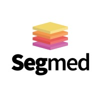

|
Arvind Rajaraman I am a 4th year undergraduate student at UC Berkeley, and I research at Berkeley Artificial Intelligence Research with Professor Anca Dragan and formerly Professor Andrea Bajcsy. Broadly, I am interested in building embodied agents that can reason about the world, plan, and collaborate with humans effectively using deep learning. Industry Experience. I was a Machine Learning Scientist Intern at Atlassian, where I worked on large language model (LLM) infrastructure. In 2022, I interned Nuro (an autonomous vehicles startup), where I worked on low-latency video streaming and model uncertainty estimation. In fall 2021, I interned at NVIDIA's autonomous vehicles team, where I worked on AutoML and vision models. Other Experience. I was the Head TA for Berkeley's CS 188 (Introduction to Artificial Intelligence) and CS 189 (Introduction to Machine Learning), and I was on the executive board of Machine Learning at Berkeley (ML@B). I am an Accel Scholar, Conviction Fellow, part of the EECS Honors Program, and a part of the Management, Entrepreneurship, and Technology (M.E.T.) Program. I've also won awards at 4 hackathons, the most interesting project being Origin, which is an LLM-based browser extension that cleans up your tabs. This project got shouted out by Harrison Chase (founder of LangChain) and won an award with Pear VC. |
ResearchI am excited by the prospect of embodied robots that can generalize easily to unseen tasks and environments, in order to become widely useful to humans. My research interests include deep reinforcement learning, unsupervised learning, language modeling, and human-robot interaction. More specifically, I am interested in creating embodied agents that model human learning, effectively representing their goals, intent, and biases. Becuase language is inherently information-dense, abstractable, highly available from a data standpoint, and contains knowledge about usefulness to humans, I am interested in building learning systems that use language to interact with humans, represent knowledge, and plan. * Indicates equal contribution and co-authorship. |
In-Progress ResearchThe following are research projects that are currently in progress. |
|
|
|
Explicit vs. Implicit Modeling of Human Internal State for Robot Planning
Arvind Rajaraman, Ran (Thomas) Tian, Anca Dragan, Andrea Bajcsy Project in progress [Presentation] A new method for robots to collaborate with humans by co-evolving a sequence model that estimates a human's internal state (with a model-based prior) and a robotic influence policy. |
TeachingInstructors of each course are listed in parantheses. |

|
CS 189: Introduction to Machine Learning
Head Teaching Assistant, Fall 2023 (Jitendra Malik, Jennifer Listgarten) Head Teaching Assistant, Spring 2023 (Jonathan Shewchuk) Teaching Assistant, Fall 2022 (Jitendra Malik, Jennifer Listgarten) |

|
CS 188: Introduction to Artificial Intelligence
Head Teaching Assistant, Summer 2022 (Yanlai Yang, Angela Liu) Teaching Assistant, Spring 2022 (Stuart Russell, Dawn Song) |

|
CS 70: Discrete Mathematics and Probability Theory
Academic Intern, Spring 2021 (Shyam Parekh, Satish Rao) |
Industry Experiences |

|
Atlassian
Machine Learning Scientist Intern Core Machine Learning Team Worked on a search relevance algorithm, RLAIF (reinforcement learning with AI feedback) infrastructure, text-to-SQL, and chatbots for question answering. |
|
Nuro
Software Engineer Intern Fleet Infrastructure Team Worked on video streaming infrastructure, model uncertainty estimation, and auto-labeling for video classification tasks. |
|

|
NVIDIA
Software Engineer Intern Autonomous Vehicles Division, DriveIX Worked on AutoML for hyperparameter tuning of vision models, increasing data fidelity of vision data, and ML engineering infrastructure. |
|  |
Segmed (YC W20)
Software Engineer Intern Worked on authentication, authorization, and developer productivity tools. |
Selected Side Projects and Open-Source ContributionsBelow are a set of selected side projects. To see more, visit my Github and Devpost. |
|
Origin
Best Frontier Tech Hack, Stanford TreeHacks 2023 [Blog Post] [Devpost] [Code] [Tweet] Built an LLM-based browser extension that cleans up your tabs and builds context-aware workspaces. Won Best Frontier Tech Hack from Pear VC and received an investment offer at a $2.5 million valuation. Also received interest from Sequoia and shout-out from Harrison Chase (creator of LangChain). 70+ stars on GitHub. |
|
|
Successive Weight Regularization for Plasticity in Deep Reinforcement Learning
Verona Teo*, Arvind Rajaraman*, Seyone Chithrananda* CS 285 Final Project, 2023 [Paper] [Code] Explored ways to mitigate the effects of neural network plasticity loss in the context of deep RL. Found promising results in regularizing singular values to promote desirable convergence properties. |
|
|
Verbal Coding
Winner of Education Track and Best Use of Google Cloud, HackNYU 2019 [Devpost] Developed a verbal code editor that uses NLP to convert spoken pseudocode into well-formed Python code. Continued work and received mentorship from MIT Professor Kyle Keane. |
|
Some other projects I pursued are below. Any awards won are noted in parantheses.
|
MiscellaneousI was previously the Vice President of Machine Learning at Berkeley (ML@B), which is Berkeley's undergraduate ML group. I taught introductory ML workshops across the Bay Area, ran an internal new member education program, and managed $100,000 of finances. Below are some links of content I've developed:
|
|
|